Publications & Preprints
To get the full list of my papers, please check: [Google Scholar]
2026
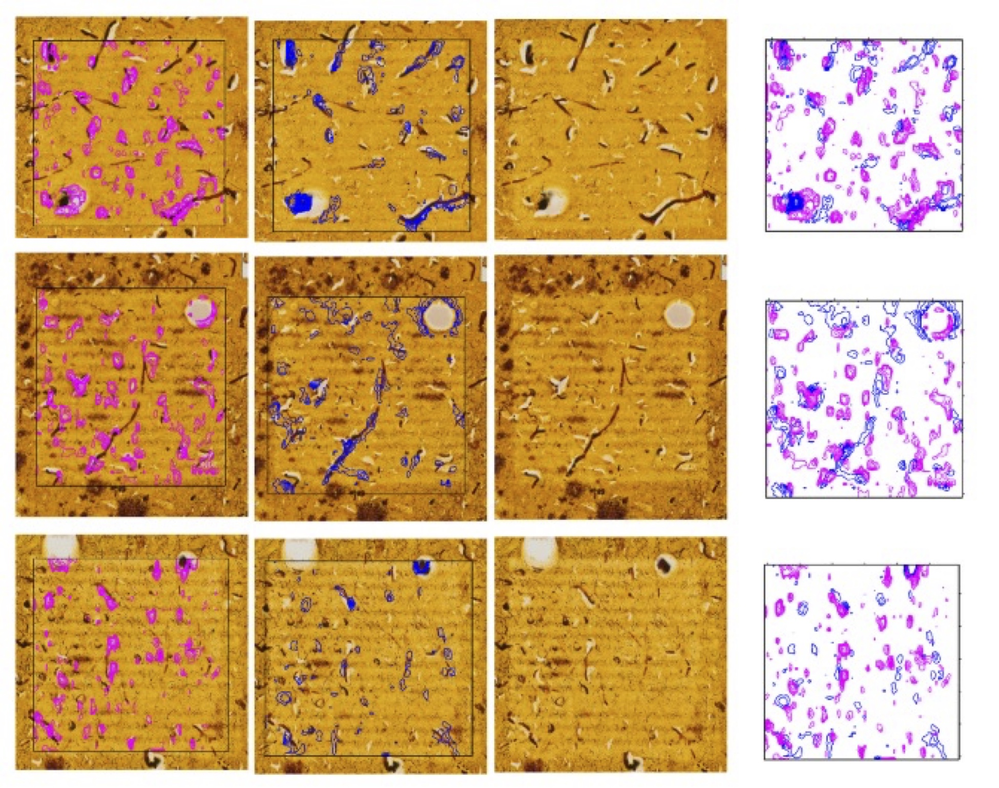
Multi-modal tracking of Protein deposition and clearance in the progression of Alzheimer's disease
in preparation, May 2026
2025 & Earlier
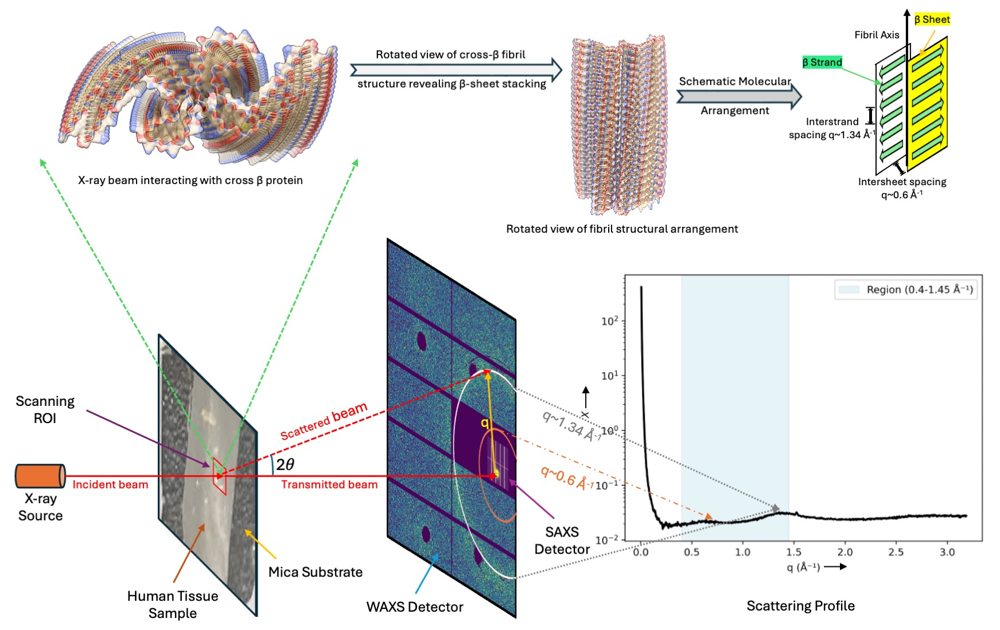
A Multicollinearity-Aware Signal-Processing Framework for Cross-β Identification via X-ray Scattering of Alzheimer's Tissue
Under review, submitted Nov. 2025.
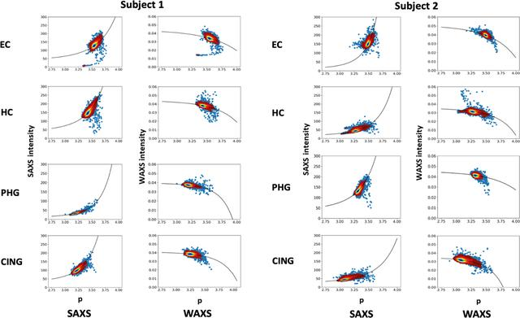
Characterization of sub-micrometre-sized voids in fixed human brain tissue using scanning X-ray microdiffraction
Journal of Applied Crystallography (IUCr), Oct. 2024
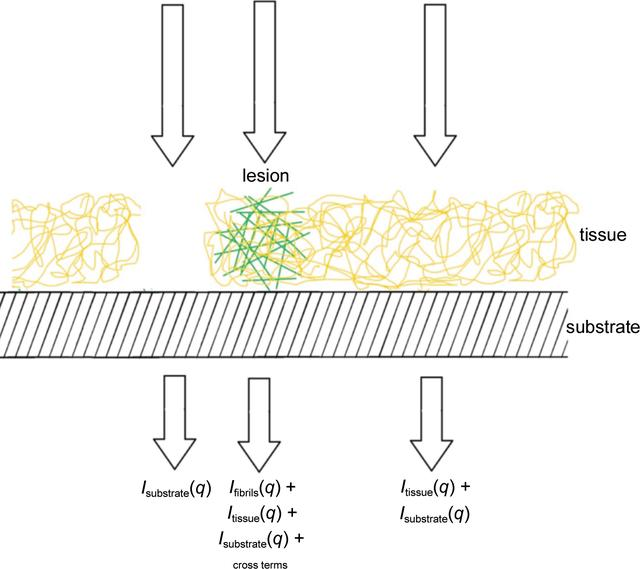
Small-angle X-ray microdiffraction from fibrils embedded in tissue thin sections
Journal of Applied Crystallography (IUCr), Dec. 2022
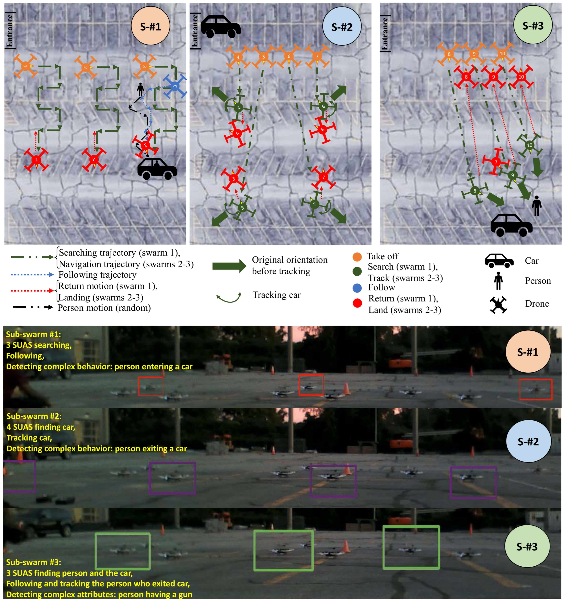
Preliminary Experimental Results of Context-Aware Teams of Multiple Autonomous Agents Operating under Constrained Communications
Robotics, Sep. 2022
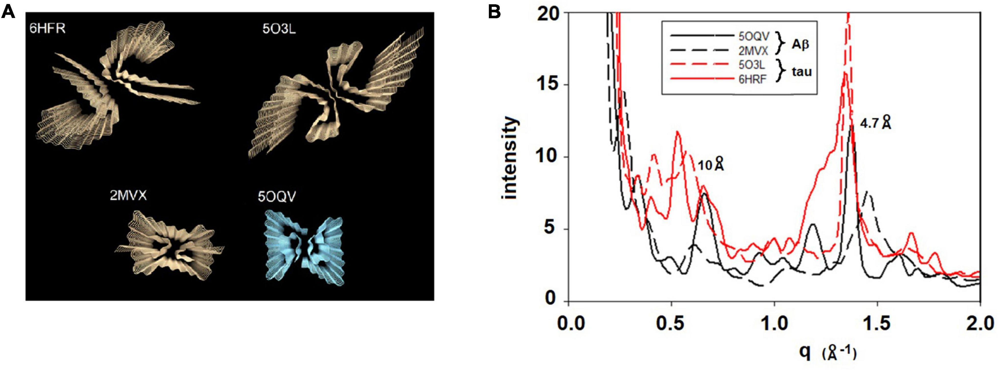
Mapping the Spatial Distribution of Fibrillar Polymorphs in Human Brain Tissue
Frontiers in Neuroscience, May 2022
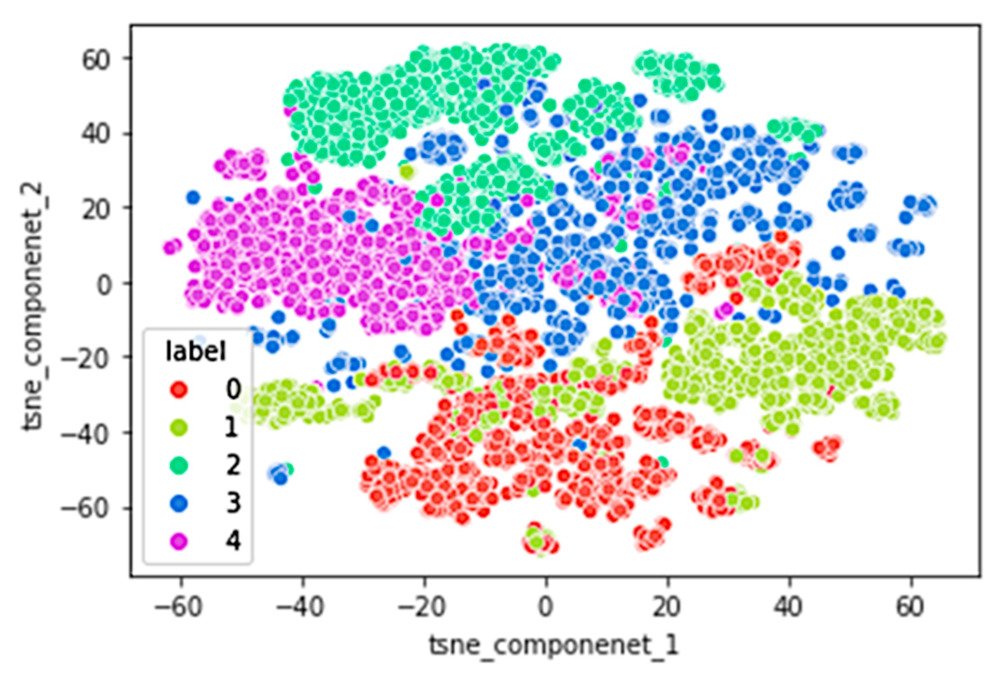
An Initial Machine Learning-Based Victim's Scream Detection Analysis for Burning Sites
Applied Sciences, Sep. 2021
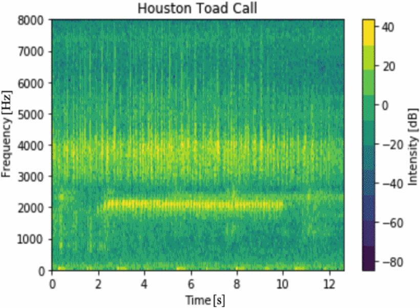
MFCC-based Houston Toad Call Detection using LSTM
Proceedings of the 2019 IEEE International Symposium on Measurement and Control in Robotics (ISMCR), Houston, Texas, USA, Sep. 2019
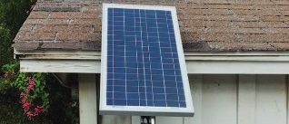
A Solar Powered Raspberry Pi Houston Toad Call Detection System Using Neural Network Model
Proceedings of the 2018 International Conference on Computational Science and Computational Intelligence (CSCI), Las Vegas, Nevada, USA, Dec. 2018
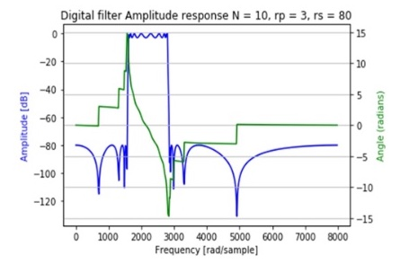
A Mel-Filterbank and MFCC-based Neural Network Approach to Train the Houston Toad Call Detection System Design
Proceedings of the 2018 IEEE 9th Annual Information Technology, Electronics and Mobile Communication Conference (IEMCON), Vancouver, British Columbia, Canada, Nov. 2018
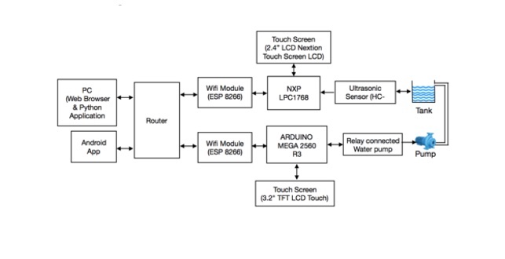
An Embedded Approach for Controlling Automatic Water Pump and Monitoring Real-Time Remote Data on Desktop, Android, and Web-based Application
Proceedings of the 16th International Conference on Embedded Systems, Cyber-physical Systems, and Applications (ESCS), Las Vegas, Nevada, USA, Aug. 2018
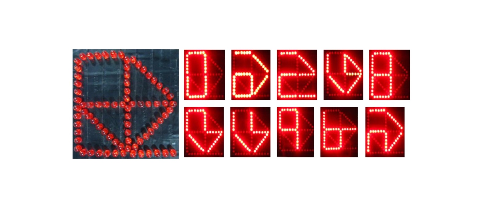
Design and Fabrication of Segment Display Architecture for Displaying Bengali and English Numerals
Australian Journal of Basic and Applied Sciences (AJBAS), Nov. 2014
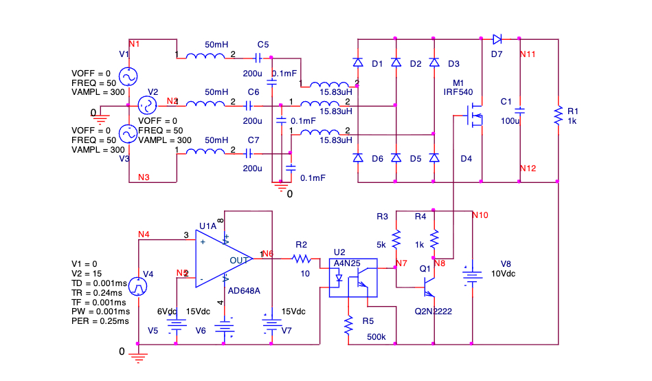
Harmonic Analysis of Front-End Current of Three-Phase Single-Switch Boost Converter
International Journal of Applied Information Systems (IJAIS), Mar. 2013
Selected Conference Abstracts
Integrating semi-supervised learning and transformer neural networks for lesion classification in Alzheimer's disease pathology
American Crystallographic Association (ACA) 74th Annual Meeting, Denver, Colorado, USA, Jul. 2024
Probing the microstructure of pathological protein deposits in Alzheimer's disease
Biophysical Society (BPS) 68th Annual Meeting, Philadelphia, Pennsylvania, USA, Feb. 2024
Mapping of pathological inclusions in human brain tissue with Alzheimer's disease
American Crystallographic Association (ACA) 73rd Annual Meeting, Baltimore, Maryland, USA, Jul. 2023
Unsupervised learning approach for mapping of pathological lesions in X-ray scanning microdiffraction studies of Alzheimer's disease
Biophysical Society (BPS) 66th Annual Meeting, San Francisco, California, USA, Feb. 2022
Classification of tissue variations in X-ray scanning microdiffraction from thin sections of human brain
American Crystallographic Association (ACA) 71st Annual Meeting, Virtual, Aug. 2021